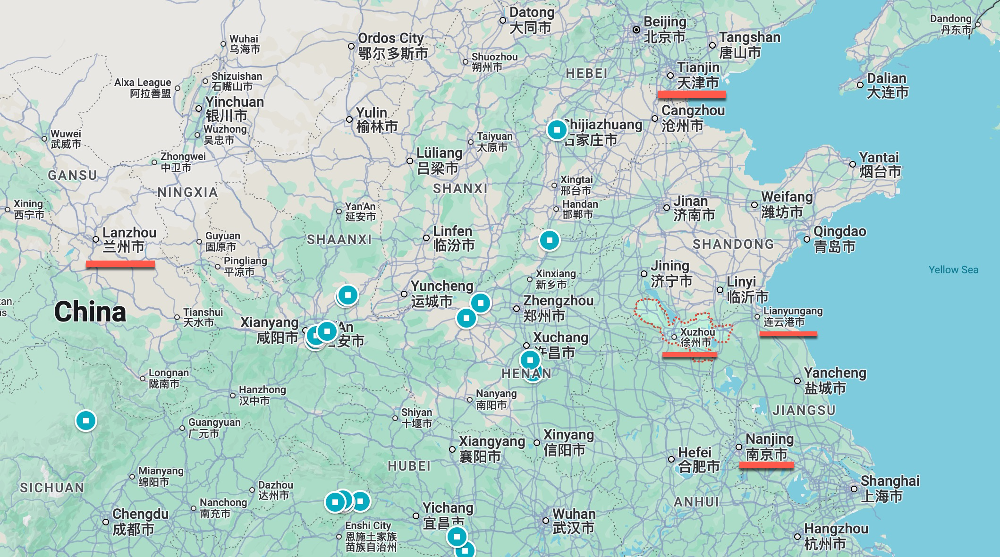

第3章 在毛泽东手下整顿秩序：1974–1975
1974年12月，周恩来离开病床飞往长沙去见毛泽东，两人要商定北京关键领导岗位的人选，他们都知道自己已经来日无多，因此这项工作十分紧迫。周恩来在6月1日刚动过癌症大手术，身体十分虚弱，无法每天正常工作，他飞往长沙时乘坐的飞机就像个小型医院，有医生陪同。1毛泽东则患有心脏病和葛雷克氏症，医生告诉他剩下的日子不足两年了。他的视力也严重衰退，说话含混不清。不过，两位领导人虽然重病缠身，头脑都还清楚。他们两人虽有分歧，但也有一项共同的任务，就是为党和国家选定继承他们毕生事业的领导人。
当时负责党内日常工作的是年仅39岁的王洪文，他也来到长沙加入了他们。虽然没有正式的规定，如果他们选定的人表现不错，就可以在毛周之后继续主政。他们所决定的党内职务的人选，将由定于1975年1月8日至10日召开的二中全会正式批准；政府职务的人选则要由随后召开的全国人民代表大会批准。周恩来的身体状况不允许他每天开会时间过长，因此三个人的会议持续了五天，以便留出充足的休息时间。他们从12月23日到27日每天都开会，只有26日除外，这一天是毛泽东81岁生日，毛和周单独会面。
为了给长沙的会面作准备，周恩来花了几周时间征求政府其他领导人的意见，筛选出一个他们认为最适合担任高层职位的人员名单。他和手下人员对建议的人选名单三易其稿，同时拟定了全国人民代表大会的日程。在周恩来去长沙几天以前定稿已送交毛泽东，作为他们商讨的基础。
毛泽东尽管年老体弱，仍然握有左右国家命运的大权。但是他在1974年12月摆在头一位的工作是安定团结。他在批林批孔运动中对周恩来的严厉攻击已经结束，两位最高领导人现在又像过去一样合作共事了。2毛泽东与周恩来见面时，表示他仍要致力于继续革命，但事实上他批准了周恩来及其在北京的部下提出的他们认为最有能力领导政府和管理经济的人选。3毛泽东支持能够提供更稳定的政治环境、使经济得到有序发展的高层干部，这使周恩来大受鼓舞，他回到北京时已是精疲力竭，但也很宽慰。
毛周的接班计划：1974年12月
毛周二人在见面之前已经内定王洪文继续担任党的第一副主席。他们也同意把领导政府的主要工作正式交给邓小平。6月1日周恩来动手术后，邓小平接手周恩来的工作干得不错，因此毛泽东宣佈支持让邓小平在10月份担任第一副总理，将在全国人大得到正式任命。除了领导政府的主要工作外，邓小平还将被提拔担任党和军队的要职。
王洪文和邓小平将正式接过党和政府最高领导人的工作，但事实上仍是给毛泽东和周恩来当下手，他们在去世之前会一直保留主席和总理的头衔，王洪文和邓小平要继续接受这两位老资格领导人的指示。毛泽东保留着他的权力，只要对他们的表现不满意，他随时能撤换他们。
因此，1975年1月5日的中央1号文件仍把毛泽东列为党的主席和军委主席，任命邓小平担任军委副主席和总参谋长。在1月8日至10日的中共十届二中全会上，王洪文被确认为党的副主席（排名在毛泽东和周恩来之后），邓小平被任命为党的副主席和政治局常委。在1975年1月13日至17日的全国人民代表大会上，邓小平又正式担任了第一副总理。
在毛泽东看来，王洪文和邓小平是个很有前途的组合。王洪文原是造反派头头，对毛泽东感恩戴德，又没有自己独立的权力基础，因此可以认为他将领导中共继续沿着毛泽东的革命道路走下去，忠实于毛本人的路线。邓小平有丰富的知识和经验，又有可靠的领导能力，能够领导外交事务和复杂的政府工作。
凡是了解王洪文和邓小平的人都知道，王洪文没有多少担任要职的经验，他的权力事实上要比邓小平小得多。邓小平当过十年党的总书记，一直负责党和政府的日常工作，在运用权力上从不含煳。但是，通过把王洪文放在更高的位置，把宣传工作交给以江青为首的激进派，无论邓小平可能有何种偏离毛泽东路线的倾向（例如像他在1960年代初的表现那样）都会受到控制。毛泽东虽然批评江青好走极端，有野心，但他知道江青在支持他的宣传路线上十分坚定，完全可以放心。4此外，江青手下的激进派在姚文元的帮助下掌管着党报《人民日报》和理论刊物《红旗》杂志，另一个激进派张春桥掌握着中国人民解放军总政治部。5
周恩来的谢幕：1975年1月
全国人民代表大会于1975年1月13日召开，这是自1965年1月以来第一次召开的全国人民代表大会，当时毛泽东仍在长沙。已是癌症晚期、面黄肌瘦的周恩来，在他最后一次重要的公开露面中，宣读了政府工作报告。邓小平在幕后主持起草了周恩来的报告。为了不使周恩来过度疲劳，他叮嘱起草人讲稿不要超过5,000字，篇幅要远小于正常的政治报告。邓小平深知毛泽东依然大权在握、一言九鼎，因此报告中充斥着毛的文革语言。周恩来在讲话中赞扬了文革及其模范典型大赛和大庆。当他念到”我们的首要任务是深入、广泛、持久地开展批林批孔运动”时，想必会让代表们感到特别心酸，因为周恩来本人正是那场运动的主要批判目标之一。6
周恩来做报告时，很多人大代表都为他痛苦的表情落下了眼泪；念完报告后，他们全体起立，向他热烈鼓掌达数分钟之久。这种情感上的反应，是他们向这位临终前的领导人表达的敬意，他把自己的一生奉献给了党和国家，工作出类拔萃；他在文革中保护了他们中间很多人，却在毛的手下蒙受不白之冤。瞻望未来，很多人盼望文革浩劫早日结束，国家能够最终致力于周恩来在11年前首次宣佈、在这次报告中又重新提出的任务——在本世纪末实现四个现代化。7
1975年2月1日，在国务院各部委领导人的小型会议上，周恩来说，他以后不会再参加他们的会议了：”主席指定副总理第一名是小平同志，主席称赞小平同志有能力，他政治思想强，人才难得⋯⋯这样的会，我不可能常来参加，将来这样的会，请小平同志主持。”其实，将近一年以前，从1974年5月邓小平赴美参加联大会议时起，他就主持接待外宾、替周恩来做一些其他的工作。但是直到1975年2月，权力才被稳固地移交给邓小平，使他能够全面负起责任，只要别惹毛泽东生气即可。邓小平很敬重周恩来，常去医院看望他。他以恰当的谦虚态度解释说，由于总理有病，他才协助总理工作。8但事实上他已经成了负责人。
整顿党的领导班子
邓小平在1975年面对的难题是既要得到毛的支持，又要拨乱反正，使中国走上发展的正轨。为了不失去毛泽东的欢心，他十分留意毛的喜好。他不断为马列主义和毛泽东思想唱赞歌，避免批评文革。1975年初，他颇具创意地把毛的几句话联系在一起，为自己的工作提供依据。在1975年5月29日的一次讲话中，他第一次提出了毛泽东本人从未放在一起的”三项指示”：一，反修防修；二，安定团结；三，把国民经济搞上去。9第一条”反修防修”的说法是再次向毛泽东公开保证他决不会走资本主义道路，他在文革中就是为此而受到批判的。然而，这也是使苦药更容易下咽的糖衣。他接着便强调毛泽东支持安定团结和发展国民经济，这使毛泽东也难以反对他采取那些颇为激烈的措施，他要通过这些措施使倦怠于文革的极端做法的中国恢复安定，重新焕发活力。
勇士邓小平以毛泽东的”三项指示”作掩护，大刀阔斧地拨乱反正，着手带领国家步入现代化的轨道。但他面对的问题是巨大的。就像其他国家内战之后的领导人一样，他必须把文革的加害者和受害者团结在一起。同时，中国经济停滞不前，计划一团混乱，统计报告皆不可靠。农业生产不足以养活人口，更不用说种植棉麻等工业作物。运输系统陷入崩溃，一地物资无法运往另一地的工厂。军队因为无休止的政治斗争和承担管理全国地方工作单位的无限责任而超负荷运行，荒废了训练，军事技术远远落后于潜在的敌人。简而言之，中国对军事冲突毫无准备。另外因为知识分子在文革中受到残酷打击，整整十年基本上没有培养任何技术专家。因此，邓小平在领导四化工作时，缺少训练有素的必要人才。
自1941年以来，毛泽东就用”整风”运动来实现党的团结。”整风”是一个强大武器，用来打击那些不够服从毛泽东的个人领导和立场的人。在漫长的调查期间，要求受害者为自己的忠诚作出详细的辩护，使同事相信自己的清白。受批判的人承受着巨大的精神压力，结局也很悲惨：有些人被处死或被送去劳教，有些人因不堪重负而自杀。在1940年代和1950年代初，通过整风形成的纪律对中共在内战中战胜国民党、统一全国起到了关键作用。但是从1957年开始的历次严酷的整风，也让很多过去忠诚的知识分子和党员疏远了党。
1975年，邓小平把他为加强团结而开展的工作称为”整顿”，这在过去一直是中共军队里的一种说法，周恩来在1972年也曾用过这个词来表示与邓小平相似的主张。军队的”整顿”是指一场战斗或战役过后，对各单位剩余的部队进行整编，以便为下一场战斗作好准备。整编的关键工作是为各单位确定新的领导班子，以取代受伤或死亡的人员。在整顿中要对以往战斗中的错误提出批评，但重点是恢复补给和重建领导班子，使之能够迎接下一场战斗。
在1975年进行整顿时，很难阻止下面的干部重施故技，用他们在整风运动中学会的方式进行更恶劣的迫害，尤其当他们有机会向过去迫害过自己亲友的人算账时。邓小平要结束过去25年来政治运动中的冤冤相报，他不断表示，目的不是算旧账，而是要通过整顿为迎接新的挑战作好准备。
邓小平认为，组织一个有效率的国家政府的关键不是改变法律法规，而是为各级行政单位配备一个领导班子，交给他们实权。为了在熟悉基层情况的基础上提供有力的领导，各级干部为下一级选出可靠能干的领导人便至关重要。在邓小平看来，从组织的可靠性上说，一个领导班子要优于一名领导人，不管后者多么能干。一名领导人说不定会出事，但如果是一个小班子，一旦出了问题，其他人可以随时接过工作。理想的安排是：领导班子的成员不但能提供必要的全面领导，而且能掌握各自分管领域的专业知识，例如工业、文化和政法等等。大单位的领导班子可以有七八个成员，小单位也许只需要两三个人。对于领导应当如何开展工作，要给予他们足够的活动空间，只要他们能完成上级下达的目标即可。
1975年邓小平排在第一位的工作，就是为全国各级单位选出领导班子。他这项工作在1975年10月以前一直能够得到毛的全力支持，包括不再重用过去的革命造反派，让在文革初期挨过整的更有经验的干部取代他们。在1974年底和1975年，毛泽东支持为六百多名老资格的领导干部平反。
邓小平着眼于长远，在1975年底也开始改善教育系统，以便将来有可能以知识和管理能力而不是人脉关系为标准选拔新干部。这在当时必然只能是一个遥远的梦想。邓小平在1975年接手的体制是一个烂摊子，很多最能干的干部没有任何学习机会。他们经历各异，标准统一的考试派不上用场。要到十年以后，大专院校才能提供足够的毕业生，使学历能够作为选拔领导班子的标准，甚至应用于中层单位干部的选拔。事实上，政府在很多年里只能依靠个人评价去选拔干部。
能否得到选拔对干部来说是大有差别的。得到选拔不但意味着饭碗，还有特权和荣誉，他们的家人也有更好的就业、住房和教育前景。此外，由于文革给社会造成的分裂，选拔领导班子必然是一个明争暗斗的过程。为了使体制变得更加精英化，邓小平只能先从最上层做起，让可靠的老干部去选拔领导班子，然后再层层选拔，直到最基层。邓小平的整顿首先从军队抓起。10
整顿军队
邓小平担任总参谋长后，便不失时机地采取了他认为对于整顿军队最为重要的一些措施：恢复纪律，裁减兵员，改善训练，为每个单位创建新的领导班子。1975年1月25日，他在毛泽东的全力支持下，召集总参谋部11团级以上干部开了一个会。前政委邓小平直言不讳地列举了军队的问题。解放军在文革期间承担起地方的许多职能后，变得臃肿不堪，很多干部变得”肿、散、骄、奢、惰”。他说，最上层的纪律涣散导致了派系林立。部队干部在文革时期有权管治平民，这使他们变得傲慢自负，很多人利用这种权力住大房子，大吃大喝，耽于享乐，给朋友送高级礼品。上级干部作风懒散，对下面的问题不闻不问，执行命令拖泥带水，不愿意承担有危险的任务。12结果是尽管军队规模庞大，保卫国家的能力却十分低下。很多部队单位成了一个个小独立王国，就像抗战时期各占山头的游击队一样。13
有”钢铁公司”之称的邓小平清楚地表明了他将如何对付那些不服从命令继续搞派性14的人。他说：”今后军队干部的使用、提升，一条重要的原则，就是不能重用派性严重的人，不能重用坚持派性不肯改正的人。”他明确说，这种警告也针对最高级别的人。他发下誓言：”无论牵扯到多少人，都要做到底。⋯⋯我们是人民军队，我们的任务是打仗。”15很多仍在搞派性的人过去参加过红卫兵和革命造反活动，但是邓小平没有指责他们以往参加过这些组织。重要的是他们现在做什么。无论过去打过什么派仗，只要愿意与新领导人一起工作，都会受到欢迎。
邓小平和叶帅很幸运，他们为恢复军队纪律和朴素作风所作出的努力得到了中央军委常委11名成员中大部分成员的坚定支持。中央军委的常委会1975年2月5日才正式恢复，承担着领导军队日常工作的职责。常委中的激进派（王洪文和张春桥）在数量上完全被邓小平和叶帅的支持者所压倒。
在常委的支持和毛的批准下，两位领导人陆续使25,000名前军队干部中的很多人重返工作岗位，邓小平说，他们是在林彪时代受到了诬陷。他指示说，要让受到诬陷的人回来工作，有病的要给看病。他说，清查工作要尽快进行，但不必公开。16
在接手新的工作之前，邓小平已经在明确思考军队现代化的问题。1975年1月14日，即上任刚过一周，他就指示部下着手制定改进军事装备和军需物资的五年规划和十年规划。17规划内容包括修理和改造旧装备，以及生产缺失的零部件，这些都是在文革中被严重忽视的工作；还要研发导弹和其他现代装备。18
像毛泽东一样，只要一提到美国撤出越南后苏联日益增长的威胁，邓小平就会动怒。他担心美国失去民意支持，不再愿意坚定地对抗苏联。他也担心1974年8月取代尼克逊的福特总统缺少尼克逊对战略问题的深刻理解，不能像尼克逊那样随时准备对苏联的任何新威胁作出妥善的反应。因为美国如果不向苏联施压，苏联在亚洲就可以随意进行扩张，它已经在中苏边境部署了100万军队。
邓小平深知，美国是唯一能够全面抑制苏联的大国，因此每一次会见美国官员时他都会敦促他们对苏联采取更强硬的立场。毛泽东不必担心邓小平会像周恩来那样在跟美国打交道时示弱。1974年4月和11月邓会见基辛格时，不但提醒基辛格注意苏联的侵略行动，还不断讽刺他在对付苏联的攻势时缩手缩脚。19事实上，邓小平指示他的外交部官员，特别是中国驻联合国及其安理会代表黄华，每次见到美国人都要批评他们对苏联的立场不够坚定。
在1975年，占用邓小平最多精力的军队问题是裁员。军队的臃肿造成预算紧张。现役军人超过600万，比1966年多了20%。20中国需要对文化水平不高的军队高层干部进行裁减，培养了解现代技术的新一代领导人。裁军是一支现代、稳定的军队能够长期发展的最关键的第一步。但是邓小平也知道，如果战争迫在眉睫，那就不可能大幅裁军。毛泽东说过战争不可避免，邓小平并没有挑战这个观点，但是他确实说过，中国能在未来若干年里减少战争的危险。
军队的任何问题都不像裁军那样引起了强烈的抵制，一个领导人假如没有邓小平在部队里的地位和强硬作风，就会知道这项工作几乎不可能完成。每年都有大量复员军人回到地方后找不到工作。当时还没有新的市场机会，政府财力也有限。安置工作也一团糟，造成大批转业老兵抗议他们没有得到适当的安置。
邓小平裁军工作的要点是制订新的编制表，然后把需要裁减的名额分配到全军各个单位。早在1975年1月14日，邓小平就在总参一次干部座谈会上宣佈，要制定出规定各单位人数的新编制表。21新的编制表完成后，空军和海军不会减少员额，但是陆军要裁员。此外，技术专业的岗位也不会减少。有些地方的军队人数要大幅减少，但是像新疆一类敏感地区，军队编制还要增加。22新的编制表完成后，由各单位负责实施具体的裁军工作，确定哪些人要保留，哪些人要裁撤。23就像他一向处理有争议的问题那样，邓小平不但下达指示，而且说明他的理由。他解释说，国家财力有限，能让钱用于现代武器系统的唯一办法就是减少人员开支。即便是那些担心自己被裁掉的人也很难反对邓小平的这个理由。
为了减少对裁军的抵制，邓小平加大了为复员和转业军人找工作的努力。尽量安排退休的部队高层干部在地方党政机关或国营企业工作。普通军人主要安排到农村担任公社干部，还有一些人转业去了工厂。24要求政府干部负责在当地为老兵安排工作。
邓小平利用1975年6月24日至7月15日召开的军委扩大会——这个大会因林彪事件而拖延了四年——为裁军计划寻求支持。一些军官为避免削减自己单位的人员而提出特殊要求，但计划并未发生多大改变。25会议确定了三年内减少兵员160万的目标，其中包括大约60万名军官。26
新的编制表一完成，军队立刻开始选拔各级领导班子。邓小平为新领导班子的面貌定出基调，他说：新当选的干部要能够运用新技术改进常规装备和先进武器，能够通过科学分析提高指挥和管理水平；要增加训练和学习，以便提高干部素质，帮助他们制定适应未来条件的战略；需要有关心部队、能够改进军民关系的政治干部。27中国的武器已经严重落伍，财力十分有限，因此邓小平要求把钱花在刀刃上。军委扩大会刚一结束，来自400多家国防工业大厂的领导干部就在7月20日到8月4日召开会议，根据提高技术水平的新工作重点对他们的工作责任进行评估。28
军委扩大会召开几周后，宣佈了中央军委的新成员。毛依然允许激进派控制宣传工作。”四人帮”中最老练的张春桥任解放军总政治部主任，但邓小平仍然担任总参谋长，叶剑英保留了对军委的领导权。大多数中央军委常委都是能与邓小平和叶剑英合作共事的有经验的军队干部：聂荣臻、粟裕、陈锡联和梁必业。
邓小平及其盟友有效控制着激进派。在军委扩大会上，级别最高的激进派王洪文和张春桥都没有公开发言。”四人帮”试图控制人事任命权，把他们以后可以用来打击对手的人事档案搞到手，但是没有得逞。张春桥仍担任总政治部主任，因此控制着宣传，但他完全不掌握人事任命权。邓小平和叶帅在军队中得到的支持要大大高于张春桥，由他们决定工作日程，并且在下级的任命中起着主导作用。29
邓小平也恢复了部队的培训计划。1966年之前的101所军事院校，在文革中大多数都被关闭。有些院校破败不堪，无法重新开学。但是也有一些院校虽然不再教学，但教员仍住在校园里。还能教学的有经验的教员又被请了出来，让他们修订教材，重登讲台。
与学校相比，大多数高级军事技术研究所在文革中受到了保护（甚至一些民用研究所也被置于国防科委的保护之下）。但是，由于既没有大学的支持和新毕业生的输入，又缺少民用研究机构提供的相关支持和与国外的技术交流，中国的军事技术已远远落后于它的潜在敌人。研究机构需要重整旗鼓，叶帅在1975年劝说已退休的张爱萍重新出马帮助他工作，在组织军事科研方面，张爱萍是最有经验的高级军官之一。
两个研究和开发机构闹派性十分严重，因此需要给予特别关注：一个是主要从事核武器开发的二机部，另一个是研究弹道导弹30的七机部。在1974年，发射洲际弹道导弹31的三次试验均以失败告终，这使得批评这两个部的领导很容易得到政治上的拥护，但是对激进派的支持并没有消失。32“四人帮”的追随者在其中一个部下面的一个工厂中仍很活跃，他们贴出了声讨张爱萍只抓生产的大字报。
5月19日，邓小平在访法回国后的次日参加了负责军工技术的领导干部聂荣臻（他也是邓小平在法国勤工俭学时的同志之一）在七机部召开的会议。邓小平的讲话十分强硬，他说，政府不能再容忍派性，领导人必须在6月30日以前消除一切派性，7月1日之后大家要合作共事，不然就对他们不客气：坚决调开。
得到毛泽东和周恩来的同意后，邓小平和叶帅监督着这两个问题严重的部门进行整顿，仍然闹派性的人被开除，创建了组织科研工作的新领导班子。33从1975年第四季度到1976年，作为裁军工作的一部分，编制表中正式取消了46.4万个岗位。当然，有些人想方设法留在了自己的岗位上，但叶帅和邓小平已经尽其所能落实了他们的裁军计划，新的领导班子也已选出，待时机到来便能在他们的部门和队伍中应用现代科技。34
总之，在1975年，邓小平和叶帅在毛泽东和中央军委大多数人的支持下，在恢复纪律、裁军、为改进部队的教育和技术水平铺平道路方面，都取得了可观的进步。
地方整顿的战略：徐州铁路局
为了在地方整顿上取得突破，邓小平采取了抓典型的方式，这既能迅速增加生产，又能鼓励其他单位。他在打游击的年代就认为，打一些胜算在握的小仗，可以鼓舞部队准备打好大仗。1975年，很多因为不能完成生产指标而受到批评的工厂都抱怨它们的物资供应不足。运输是一个明显的瓶颈。假如能在交通运输领域初战告捷，是不是既能增加生产，又能为其他领域树立成功的先例？
中国在1970年代中期还没有现代高速公路系统，货运基本依靠铁路。因此当邓小平致力于改善运输时，便将注意力集中在了江苏北部的城市徐州，这里是东西铁路大动脉陇海线35和南北铁路大动脉津浦线36的交汇点。在1975年3月之前，徐州铁路局已经有21个月没有完成装货和发车指标。自1967年1月起，那里的造反派之间的武斗几乎从未间断。 
1975年的形势既糟糕又麻烦。担任徐州铁路分局局长的造反派头头顾炳华能搞到武器，顽固抵制外人对他的控制。自1966年以来，顾炳华和造反派就占据着火车站附近的物资局大楼，将其作为他们个人的物资储备和供应仓库。当公安局前来抓捕一些工人时，顾炳华的同伙强行拘留了公安干警。顾炳华的同伙甚至一度夺取了徐州市党委的办公楼，把市委干部拘禁起来。37
毛泽东坚定支持邓小平整顿铁路的工作，部分原因是他本人经历过一次因混乱而造成的延误。1975年2月3日他要乘专列从长沙前往杭州，但保卫干部无法保证专列的安全，使他直到2月8日才得以成行。38前造反派头头王洪文现在也赞成打击造反派。他支持压制徐州，是因为他作为上海市革命委员会副主任，明白上海需要铁路的供应。
毛泽东和王洪文的支持使邓小平能够对徐州采取迅速果断的措施。此时万里已经担任了铁道部部长（参见本书附录〈邓小平时代的关键人物〉）。作为他早先采取的步骤之一，邓小平早在1975年1月上任之前便推荐了素以攻克难题闻名的万里担任铁道部部长。万里在早年负责领导包括人民大会堂、中国历史博物馆和中国革命博物馆在内的天安门广场周边建设项目时就曾受到毛泽东的表扬。39“万里”这个姓名的意思是”一万里”，所以毛曾开玩笑说，这个人”真是日行万里啊！”因此，当1974年12月毛泽东和周恩来在长沙开会时，他们很快就同意了对万里的任命。
1975年1月万里上任时，邓小平对他说，要”尽快采取最有效的手段”改变铁路现状。40他让这位新铁道部长抓紧准备一份有关徐州问题的报告，在他担任副总理十天后，就听取了万里的汇报。万里说，关键问题是派性，问题太复杂，解决起来需要半年时间。邓小平说，形势太严重，不能等那么长时间。
几周后的2月6日，邓小平召集纪登奎和王震听取了万里有关尽快解决徐州问题的方案汇报。在这次会议上，粗鲁莽撞、对邓小平忠心耿耿的王震将军提出派军队过去。万里说，徐州很多干部担心口头指示可能很快有变，因此他请求中央发一个书面文件，授权他镇压控制着徐州铁路枢纽的革命造反派。邓小平下令马上起草这样一份文件。
为了响应邓小平发出的制定文件解决铁路难题的号召，29个省市自治区负责工业和交通运输的书记从2月25日到3月5日在北京召开了会议。与会者一致认为徐州的问题最严重，必须首先解决。他们希望当年第二季度就能让铁路货运恢复通畅。41会议结束后，立刻根据会议的讨论出台了中央9号文件，标题是《中共中央关于加强铁路工作的决定》。42这份得到毛泽东批准的文件全面分析了当前的问题，概要说明了解决方案。最重要的是，这份文件表明，包括毛泽东在内的北京领导层完全支持万里在徐州的工作。
9号文件把必要的政治和军事权力集中到了万里和铁道部手中，从而打破了徐州铁路枢纽管辖权重叠的死结。当时，位于江苏西北角的徐州铁路枢纽靠近山东、安徽和河南边界，管理权涉及所有这四个省的干部，他们分管着从治安到铁路管理与维护的不同部门。
9号文件还规定，必须消除派性，铁道部的干部要对发生的任何事故负责。反对这些措施的人（搞派性活动者、停工者和毁坏财物者）一经发现，要立刻予以惩处。邓小平为了抢占意识形态高地，宣佈说，对抗铁道部领导的人——就算那些已经加入了激进团体的——也要被定性为违反组织纪律、搞个人主义的”资产阶级”。此外，破坏铁路财物的人要一律定为”反革命”，迅速给予严惩。43
邓小平在省委书记44会议结束时的讲话简短扼要、切中要害，既表明了他态度坚决，采用的方式又让毛泽东很难反对，尽管他要限制一些革命造反派。他引用毛语录说，必须”抓革命，促生产，促工作，促战备”。一旦发生战争，交通运输的地位十分重要，可是现在它运转不良。有些领导人担心，过于重视经济，会像文革期间那样继续挨批。为了让他们放心，邓小平说：”听说现在有的同志只敢抓革命，不敢抓生产。说什么’抓革命保险，抓生产危险’。这是大错特错的。”他明确表示，毛主席现在支持抓经济，”怎样才能把国民经济搞上去？分析的结果，当前的薄弱环节是铁路”。45
由于把铁路作为地方整顿的典型，邓小平亲自讲到全国铁路问题的细节。他说，全国铁路的日装载能力估计为55,000个车皮，但现在只能装40,000多个车皮。”现在铁路事故惊人。去年一年发生行车重大事故和大事故755件。”（与此相比，1964年只有88起。）纪律很差，规章制度得不到执行。例如，”火车司机随便下车吃饭，经常误点”，值班时间不能喝酒的规定也得不到严格遵守。”对这些人不及时处理﹝打击投机倒把、升官发财的坏分子﹞⋯⋯等到哪一年呀？⋯⋯对闹派性的人要再教育，要反对闹派性的头头。”对于那些闹过派性但已改正错误的人，邓小平说:”教育过来，既往不咎，再不转变，严肃处理。”同时，”要把闹派性的人从原单位调开”。闹派性的头头不服从调动怎么办？”不服从调动不发工资。”他又用更加积极的语气说，”我想绝大多数人是拥护这个决定的”，”铁路工人是中国工人阶级最先进、最有组织的一部分⋯⋯把这些问题讲清楚，理所当然地会得到绝大多数铁路职工的拥护。⋯⋯解决铁路问题的经验，对其他工业部门会有帮助”。46这充分显示了邓小平的特色：讲清大局，说明为什么需要做某些事，把注意力集中在任务上面，打好思想基础，为撤换无所作为的干部争取公众支持。
为了贯彻邓小平的计划，万里在会议结束后的次日就召开了铁道部全体驻京单位大会，向与会者传达了9号文件和邓小平的讲话要点。第二天又召开了全国铁路系统电话会议，向地方干部说明9号文件和邓小平讲话的重要意义。王震在电话中说，他将从铁道部向问题严重的地方派出工作组。干部们都知道王震将军的工作组中会有军队，他们在必要时会动用武力。47自土改以来，由上级派工作组一直就是保证国家政策在地方得到落实的基本手段。
万里整治铁路运输不畅的工作有全国的支持，又有中央文件撑腰，他于3月9日率领北京的工作组会见了江苏省和徐州市的党政领导。48他到达的当天就宣佈，根据邓小平亲自批准的逮捕令，对四天前被邓小平点名批评的徐州铁路分局局长顾炳华予以逮捕。49万里知道，不把顾炳华抓起来，有些干部还是不敢带头对他进行批判。他还明白，很多人就像邓小平在讲话中所说，仍然心有余悸，担心被打成右派。老练的革命领导人万里知道，为了让人们放心地批判顾炳华，需要召开一次群众大会，以此显示行动得到了广泛支持，并表明上面的大人物也在公开谴责顾炳华。9号文件的发佈起着关键作用，表明他的镇压措施不只是一个不久就会下台的领导人的意见，而是得到了党中央和国务院的全力支持。
万里到达徐州的第二天，在徐州铁路分局职工和家属万人大会上发表了讲话。他传达了9号文件的内容，敦促他们在3月底前让铁路局成为促进交通运输顺利运行的模范。次日，万里等人又在徐州体育馆召开的徐州市党员干部大会上讲话，传达了邓小平所强调的毛主席的三项指示，重申毛主席对”安定团结”的号召。在另一次群众大会——这次是机务段50的职工——上讲话之后，他们的领导作出了让货运畅通的保证。51
顾炳华被捕后，他的同伙继续负隅顽抗，直到最后锒铛入狱。和其他派下去处理类似情况的工作组一样，万里和北京的工作组把那些带头捣乱、必须逮捕或至少撤职的人与通过”教育”仍能和新领导班子合作的干部区分开来。他们对基层领导说，要解散派系，承认错误；很多人听从后得到了留用。在随后召开的小组会上，每个人都表态不再加入派别，保证货运畅通。52
为了加强对新的领导路线的支持，使当地的人们不计前嫌，也为了向当地群众保证激进派的追随者不会卷土重来，工作组宣佈为徐州地区在文革初期受到迫害的大约6,000人平反，释放在押人员。同时对派系斗争中遇害者的亲属做了道歉，对幸存的受害者进行了赔偿，53并为过去受到冤枉的很多人重新安排了工作。54为了让铁路工人完成指标，万里鼓励当地领导班子改善工人的生活条件。在接见新选出的领导班子之后，万里和工作组一起离开了徐州，距他们到达时只过了12天。他们让当地领导班子接手工作并向上级汇报。到3月底时，徐州平均每天办理的车皮数从3,800个增加到7,700个，日均装载量翻了一番，从700个车皮增加到1,400个。55
中共领导人在全国推行新方案时，经常说”由点到线，由线到面”。在徐州实现了重大突破后，邓小平决心把这个在点上取得的整顿经验推向其他铁路枢纽，然后再利用铁路的经验去整顿其他部门。3月底，负责整顿的干部从徐州转道南京和江苏等地方的铁路枢纽。56邓小平首先集中精力抓问题严重的铁路枢纽，如太原、昆明和南昌等等。他听说太原有个党委副书记阻挠当地铁路运输畅通，便指示迅速进行调查，如果情况属实，在月底以前要把这个副书记调离，如果他在上面有后台，也要一并调离。57
万里继续奔波于有问题的铁路部门，随后又视察了所有的货车制造厂——洛阳、太原、成都和柳州——以保证铁路设备的及时供应。4月24日邓小平陪同金日成访问南京时，万里赶到南京向他汇报了整顿铁路取得的进展。58对于铁路的其他老大难单位，万里采取和徐州相同的策略：召集小型会议听取有关当地情况的汇报，宣传9号文件，重申毛泽东对安定团结的重视，召开群众大会争取他们对改革的支持，在必要时还会搬出军队作为后盾。经过选拔，新的领导班子得到了任用。自然，被撤换的领导都是以前的革命造反派。
从6月30日到7月7日，万里在北京主持召开工作会议，总结了9号文件下发后几个月以来整顿铁路的经验。这几个月的变化显然是一项很大成就。据万里的报告，全国二季度的货运量比一季度提高了19.8%，客车利用率提高了18.4%。59
邓小平不可能像解决徐州铁路局的问题那样，对另一些问题付出同样多的精力，但是这个案例鲜明地体现着邓小平克服混乱、为其他地方树立典型的方法：他尽量让毛泽东站在自己这一边；依靠有成功经验的干部；发文件，召开群众大会，利用军队使群众相信文革的政策不会轻易回潮；把阻碍进步的人抓起来，并督促创建新的领导班子。而且，他做起这一切来雷厉风行。
把徐州的典型推广到煤矿和钢铁业
徐州的整顿大获成功后，邓小平又利用徐州的典型经验推动其他地方的整顿。他在3月25日让万里汇报徐州的进展，但不是向铁路干部，而是向国务院的全体干部大会。邓小平在这种汇报会上一般不说话，但这一次他却表现得很急切，数次打断万里作一些补充说明。
此后，邓小平的部下从打击徐州的派性转向打击徐州所属的整个徐海地区的派性，然后又扩大到江苏全省。江苏省在1975年是全国最乱的省份之一，1974年末全国的国民生产总值有所增加，江苏却下降了3%。万里得到支持从铁路转向对江苏全省进行整顿，就像在徐州一样，他打击派性，选拔能够带来稳定和发展的干部。不到三个月，万里就报告说，在整顿江苏的新领导班子上取得了重大进展。6月2日中央发佈12号文件，它实际上是在9号文件的基础上通报了在徐州、海州和江苏其他地区取得的进展。邓小平赞扬这个报告说，江苏的经验也可以用于指导其他地方的工作。60于是改革又从江苏推向浙江。尽管浙江的造反派仍在负隅顽抗，问题特别棘手，但是到7月17日就基本得到了解决。根据浙江的经验出台的16号文件，使这一经验又成了其他各省开展整顿的样板。61
邓小平在7月4日概述了”由点到线，由线到面”的整顿任务，即从铁路和地方政府扩大到其他部门，首先是煤炭和钢铁行业，然后是其他行业和其他运输业，接下来是商业、财贸和农业，最后从经济部门转向文教部门、从国防科技转向整个科技部门，从军队转向地方政府。
中国的基本能源供应是煤炭，住屋取暖、发电厂和工厂都离不开煤。运输是关键：煤炭运输大约占到铁路总运量的40%。但是在文革期间由于运输拖后腿，大量煤炭只能被堆积在矿区附近，使煤炭生产失去了动力。
铁路运输的难题在1975年夏天已开始得到克服，这使北京可以把更多精力转向煤炭生产。实际上，9号文件出台后，邓小平就给煤炭部长徐今强打气，让他利用运输条件改善的前景增加煤炭生产。1975年春天，徐今强把工作重点放在了铁路运输便利的产煤区：陕西、河北、河南、安徽和东北。
在邓小平的领导下，徐今强对派性发起打击，首先针对问题特别严重的省份。这些省份的煤矿所供应的煤炭数量占华东地区的40%，对这些省份钢铁厂的煤炭供应至关重要。整顿工作使它们的生产大为改观：1975年二季度的煤炭生产迅速增加，上半年结束时煤炭运输量完成了全年计划的55.5%。62
在这个时期，化肥、轻工产品和电力生产也有所改善，但是钢铁生产仍然停滞不前。钢产量在1973年达到2,530万吨的峰值后，由于批林批孔运动的干扰，1974年降至2,110万吨。1975年初确定的当年生产指标是2,600万吨。63在3月25日邓小平主持召开的国务院会议上，万里报告了如何把徐州经验运用于其他领域之后，邓小平说：”现在解决钢铁问题是头等大事。”64
在当月召开的钢铁工业座谈会上，副总理余秋里直言不讳地说：”搞了26年，花了五六百亿投资，职工300万人，只搞2,000万吨钢。”他说，为了增加钢产量，必须做到（1）保证煤炭的长期供应，要专列直达，定点供应，必要的重油和电力供应也要得到保障；（2）发动群众，要让懂技术的管理人员担任负责人；（3）克服薄弱环节，特别是鞍钢65、武钢66、包钢67和太钢68四大钢铁厂。不干工作的要免职，”不要占着茅坑不拉屎 “。69
5月初，李先念副总理把12家大型钢铁厂和当地政府的党委书记召集到一起，召开了钢铁工业座谈会。70未完成指标的钢铁厂的领导要向一群严厉的与会者解释为何没有完成指标；他们说，在批林批孔运动中挨批的干部害怕犯政治错误，他们担心毛的政策会有反复，如果不抓政治只抓经济和生产，他们又会挨批。
5月21日，邓小平结束为期一周的访法之行回国三天后，主持召开了由国务院牵头的全国钢铁工作座谈会。71邓小平不能公开谈论让很多干部担心的事——毛泽东有可能变卦，在”四人帮”的怂恿下再次打击那些注重抓经济的人。张春桥和姚文元就曾在1975年3月和4月分别发表文章，公开批判”经验主义”，这是指只重视经济生产，忽视意识形态的做法。邓小平当时心中明白却不宜公开说明的是，毛泽东曾在4月18日让他放心，并就姚文元4月23日的文章写下批示，进一步表明他现在反对批判经验主义，支持邓小平的整顿工作。
邓小平在5月份的这次国务院座谈会上说：”铁路一通，就会暴露出冶金、电力、各行各业的问题。各部都要自己打算打算，怎样工作，解决老大难。下一步的中心是要解决钢的问题。”72谷牧开始向与会者介绍钢铁问题的严重性，但邓小平插话说：”这样讲还不够。应该说，这样继续下去，对钢铁工业是破坏！”他又说：”谷牧说每年增加250万吨钢没问题，我说每年增加300万吨也不难。⋯⋯不管是哪一级的领导，不能总是怕这怕那。现在，干部中的一个主要问题，就是怕字当头，不敢摸老虎屁股。我们一定支持你们。”73
邓小平说，有四五十年资历的人也没什么大不了，”如果闹派性，管你是老虎屁股，还是狮子屁股，都要摸⋯⋯如果闹派性严重而又不改正的，就坚决调开。一年调他三百六十次。7月1号以后就不客气了。⋯⋯必要的话就把你调到乌鲁木齐，妻子一闹离婚，他就听话了。”74他说，”更重要的是，要严格，该批的批，该斗的斗，不能慢吞吞的，总是等待。铁道部已采取了坚决的措施，但在这里我看到很多人不喜欢。”他接着又说：”允许你们犯错误。要找那些敢于坚持党的原则、有不怕被打倒的精神、敢于负责、敢于斗争的人进领导班子。⋯⋯我是维吾尔族姑娘，辫子多，一抓一大把。”他说，像鞍钢这样的大企业，那么复杂，杂事很多，但是高层管理人员不能每天只抓技术性的小事。”公司必须单独有一个班子，不是管油、盐、酱、醋、柴，而是指挥生产的。”75
在5月29日召开的关于钢铁工业的会议上，邓小平强调企业要有一个强而有力的领导核心。他把重点放在钢产量占全国一半的八大钢铁厂上，并批评四家最大的钢厂——鞍钢、武钢、太钢和包钢——都没有完成指标。他说，鞍钢的问题最大，关键是领导”软、懒、散”。76
1975年6月4日，经毛泽东同意和政治局批准，向地方的钢铁主管部门下发了13号文件，内容与整顿铁路的9号文件相似。文件重申了1975年2,600万吨的目标产量。国家计委从各部委抽调人员成立了一个小组直接向国务院汇报，保证钢铁生产指标的完成。为了给钢铁厂所需物资提供保障，电力、煤炭、交通、石油等各有关部委都向这个小组派出了人员。要求各省市党委履行对钢铁厂的领导责任，确保它们完成指标。77
各大钢铁厂都召开了贯彻13号文件的职工大会，有些大会的参加者多达四万人。78直属国务院的最高领导小组也每周开会，讨论各项计划，确保指标的完成。79不过领导小组在8月1日开会评估钢铁生产时，与会者承认，要完成之前定的高额指标颇有难度。其中一个阻力是余秋里的突然病倒——春天他还在大胆领导着推动钢铁行业的工作，可是夏天生病以后，他无法再提供一贯的坚强领导后盾了。干部们仍然担心如果只抓生产，忽视极左政治，他们以后有可能遇上麻烦。确实，”四人帮”当时已经开始批评邓小平正在犯这种错误了。
中国在1975年生产了2,390万吨钢，与1974年的2,112万吨相比显著增加，但并未达到2,600万吨的目标。邓小平接受了这一进步幅度，宣佈工作取得胜利。从12月15日到23日（此时邓小平已在上层受到小范围的批判），谷牧主持召开了一个会议，与负责钢铁生产的省级干部讨论各种问题。虽然会上仍在唱高调，但高层干部们已经知道，在12月新的政治气氛中，邓小平受到围攻，地方干部对继续致力于抓增产已变得心有余悸。果然，邓小平在1976年第三次下台并被撤销一切职务后，当年的钢铁产量下降到2,046万吨。
1975年中国钢铁生产的改善与当时日本的钢产量相比是微不足道的，邓小平在三年后参观一家现代化的日本钢铁厂时就会明白这一点，仅这一家工厂的钢铁产量就是1975年中国钢铁增产后总产量的数倍。邓小平在1975年的努力，是他通过政治动员增加钢铁产量的最后一次尝试。他在1978年10月参观了日本的大型现代钢铁厂以后，在提高钢产量的问题上采取了十分不同的方式。他不再搞整顿，而是转而依靠科技。这一战略转变带来了巨大收获。1980年代中国从日本引进现代钢铁技术后，钢铁产量从1982年的3,716万吨猛增到1989年的6,159万吨，1996年又进一步增加到1.12亿吨，使中国成为世界最大的钢铁生产国。80到2010年，拥有现代技术的钢铁厂在中国遍地开花，不用进行政治动员，中国就能达到6亿吨的钢铁年产量，几乎相当于1975年钢铁产量的25倍。
浙江问题和王洪文的失势
1975年毛泽东支持邓小平选拔新的领导班子，让过去斗来斗去的人能够在一起工作。当时，分裂最为严重、最须下大力气恢复团结的省份是浙江省。811974年，随着秩序得到部分恢复，除了江苏和浙江以外，各省的经济都有增长。浙江是一个人口多、比较发达的沿海省份，有很好的工业基础。但是它的问题在1975年一季度仍很严重，工业生产比1974年一季度下降20%，全省财政收入下降28.5%。由于邓小平和万里等人的努力，1975年全国前八个月的工业生产比上年平均增长17%，浙江却下降了6%。82
毛泽东1975年2月8日从长沙来到浙江杭州美丽的西湖，在回京接待朝鲜领导人金日成之前，在那里一直住到4月中旬，对浙江产生了特殊的兴趣。他在杭州时有很多机会与省里的干部谈话，特别是党的老干部谭启龙和军队老干部铁瑛，他们都在文革中受到过冲击。毛泽东这时有恢复秩序的想法，因此觉得他们都是很能干的人。相反，他在杭州时对翁森鹤印象不佳，翁过去是造反派头头，从1973年到1974年一直有王洪文为他撑腰。1974年的批林批孔运动中，浙江的问题变得日趋严重，因为王洪文支持造反派，而谭启龙又控制不了他们。毛泽东和王洪文之间在1974年也开始出现不和，1974年10月18日王洪文飞到长沙时，毛已经对他过分紧跟江青感到不快。
1975年春，毛泽东对王洪文的怀疑进一步增加。浙江问题的严重性引起了北京的注意，于是派王洪文分别在1974年11月和1975年3月与浙江领导人协商解决问题，但他一无所获。从4月27日到6月3日的几次政治局会议上，王洪文和江青一起受到批评，部分原因就是他未能解决浙江的问题。王洪文为此作了检讨。83
1976年10月王洪文作为”四人帮”成员之一被捕后，有人说他是个无能的激进派，既鲁莽又下流，沉溺于锦衣玉食的奢华生活。实际上，王洪文曾作过一系列的努力以承担起主持党的日常工作的职责；有些了解他的人觉得，他并没有参与”四人帮”犯下的罪行。但是北京城里有众多有经验的优秀干部，像王洪文这样一个年轻的新贵，突然之间窜升到更有经验、更能干的干部之上，很难赢得一个高层领导人不可缺少的尊重。
1975年6月下旬宣佈，王洪文暂时不再主持北京中共中央的日常工作，被先后派往上海和浙江。毛泽东支持周恩来和邓小平的建议，让王洪文作为纪登奎副总理领导的工作组的一员，去解决浙江的问题。实际上，王洪文是被派去接受教育和改造，他和纪登奎一起批评那些他过去支持过的造反派，这使他的处境颇为尴尬。但是他的到来也有助于解决浙江的问题，因为这能使他过去支持的造反派看到，即使地位显赫的激进派王洪文也帮不了他们。84
纪登奎在浙江的工作跟万里在徐州的工作相似。他和工作组会见当地干部，了解问题，召开群众大会，选出以谭启龙和铁瑛(yīng)为首的新领导班子，用正式文件支持他们的工作。虽然邓小平是这项工作的主角，但是与徐州的问题相比，当时仍在浙江、与现有负责同志谈过话的毛泽东对浙江问题的解决发挥着更积极的作用。祖籍浙江、对那里很有感情的周恩来也提供了意见。
纪登奎在浙江的最后几天，和其他干部一起起草了16号文件，它对浙江的作用类似于9号文件对铁路系统、13号文件对钢铁工业的作用。1975年7月14日，纪登奎、王洪文、谭启龙和铁瑛带着文件草稿飞到北京，邓小平第二天主持召开会议讨论文件草稿，并作出了有关浙江省和杭州市领导班子的决定。铁瑛坐在邓小平的左边，使右耳听力严重下降的邓小平能够听清他在会议上的发言。85文件于次日送交毛泽东，毛批准了这个文件和人事决定，次日就下发了16号文件。
浙江的整顿工作因为毛泽东和中央领导的坚决支持，达到了在这个最混乱的省份恢复秩序、增强团结的目的。谭启龙在讲话中为自己过去一年的领导不力道了歉；并宣佈得益于北京最高层的大力支持，已牢牢控制住了造反派。浙江的干部在1975年底宣佈，1975年下半年的工业产量比上半年提高了4%。86
毛泽东并不想突然宣佈解除王洪文的正式职务，以免搞得党内人心惶惶。王洪文去浙江后又保留了半年已有的头衔，直到那时，社会上对他的失宠仍然一无所知，但是毛泽东再也没有让王洪文回到北京的领导岗位上。
重用邓小平
毛泽东打算进一步重用邓小平的第一个明确迹象出现在1975年4月18日，这一天他让邓小平陪同他一起会见金日成。他对金日成说：”我不谈政治，由他来跟你谈了。此人叫邓小平。他会打仗，还会反修正主义87。红卫兵88整过他，现在无事了。那个时候打倒了好几年，现在又起来了，我们要他。”89
在金日成访华期间，毛泽东与邓小平单独做过简短的谈话。邓小平提到了他对江青、张春桥和姚文元等人大批经验主义的担心。邓在恢复秩序和经济发展上取得的成功，使他们害怕邓对毛的影响力增加，于是开始批他只抓经济不管基本原则——这种论调曾经很合毛的口味。然而1975年4月毛泽东安慰邓小平说，这些批评太过分了。他说：”我党真懂马列的不多，有些人自以为懂了，其实不大懂，自以为是⋯⋯这也是不懂马列的一种表现⋯⋯此问题请提政治局一议。”90在知情者看来，毛的这些话意思很清楚：”有些人”是指”四人帮”，他们管得太宽了，现在更应该受到批评的是他们。
确实，政治局不久后便开会讨论毛泽东在4月25日对”四人帮”写文章批经验主义的意见。在政治局会议上，叶剑英元帅批评江青和”四人帮”其他成员攻击经验主义。江青不得不作出检讨。想帮着江青阻止邓小平扩大权力的王洪文在会后立刻写信给毛泽东告状说，周恩来对形势一贯抱有悲观情绪，现在有人替他说出来了。91读到这封信的人都清楚，所谓”有人”指的就是邓小平。但此时毛泽东对邓小平的信任没有发生动摇。
5月3日深夜，毛泽东在自己的住处召集政治局开会。毛亲自主持政治局会议说明他有不同寻常的大事要商量，因为很久以来他都是让别人主持这种高层会议。周恩来艰难地离开医院的病床去参加会议，这是前一年12月以来他第一次见到毛泽东，虽然此后周恩来又活了八个月，但这是两位领导人的最后一次会面。以毛的身体状况而论，他是能够去医院看望周恩来的，但他并没有去过。
在5月3日的会议上，毛泽东批评江青等人只批经验主义，不批教条主义。毛从未与江青断绝关系，但在这次会议上对她很严厉。他说：”不要搞’四人帮’。你们不要搞了，为什么照样搞呀？为什么不和二百多个中央委员搞团结？⋯⋯要团结不要分裂。要光明正大不要搞阴谋诡计。”他又说：”有意见要在政治局讨论，印成文件发下去；要以中央的名义，不要用个人的名义，比如也不要以我的名义，我是从来不送什么材料的。”然后他指着邓小平说：”你就是毛派的代表。”这也是毛泽东最后一次出席政治局会议。92
在政治局会议上，邓小平和叶帅等人也附和毛的意见，进一步批评了”四人帮”。他们说，毛主席5月3日的指示很重要，教导他们要搞马列主义，不要搞修正主义93，要团结，不要分裂；要光明正大，不要搞阴谋诡计。他们还批评江青夸大与周恩来的分歧，借批林批孔打击叶帅。
在5月27日和6月3日，邓小平第一次取代王洪文主持了政治局会议。江青和王洪文在6月3日的会上被迫作了检查。94几天后，邓小平陪同毛泽东接见菲律宾总统马科斯（Ferdinand Marcos）时，把会议情况向毛做了汇报，毛对邓在会议上的做法表示认可，因为他没有对江青过于严厉。邓小平向毛泽东证明了他能按毛的意愿做事，会继续和江青一起工作。
毛泽东从未完全放弃王洪文，王洪文后来还协助华国锋筹备了毛泽东的追悼会，但是，自从去了浙江之后，王洪文在党内的协商中事实上已经不起作用。王洪文被派往浙江时向毛泽东提议，请叶帅或邓小平代他主持党的会议。体力衰退的叶帅在7月1日写信给毛泽东说，自己年纪太大了，还是让邓小平领导党的日常工作吧，毛泽东立刻表示同意。叶帅在7月2日起草了一个正式文件，宣佈邓小平除了作为事实上的总理领导政府工作、作为军委副主席领导军队以外，还要主持党的日常工作。最重要的是，大约就在这时，毛泽东还交给了邓小平一项外交领域的新任务：邓小平将成为第一位对西方国家进行国事访问的中共官员。
与西方关系的突破：中法关系
邓小平于1975年5月12日至17日对法国进行了国事访问，这是中共领导人首次出访一个西方国家，这使他有机会着手为中国向西方学习作准备——就像1950年代学习苏联一样。95毛泽东选派邓小平进行这次重要的出访，使”四人帮”起了疑心，他们正确地看出这是邓小平权力增加的又一个迹象。这次出访对于作为领导人的邓小平确实有重大影响。与他一年之前路过法国时不同，这次访问提供了一次机会，使他能够更具体地了解这个他在半个世纪以前所熟悉的国家发生了多大变化，思考中国为实现四个现代化需要做些什么。
为何是法国呢？毛泽东在一年前提出”三个世界”的理论，他把欧洲的发达国家看作第二世界的一部分，也就是说，它们是中国应该与之联合共同对抗苏美两大霸权的国家。在第二世界的所有国家中，法国又是最先主动与中国创建友好关系的国家。它在1962年就与中国实现了关系正常化，而当时没有几个西方国家愿意这样做。法国总统庞比杜（Georges Pompidou）在1973年9月正式访问北京，并受到良好接待，成为第一个访华的欧洲领导人。因此，当1975年法国向中国发出国事访问的正式邀请时，中国很愿意把这个机会作为对庞比杜访华的回访，并表明自己正在从文革的自我封闭中走出来。
在1975年访法期间，邓小平受到吉斯卡尔・德斯坦（Giscard d’Estaing）总统和希拉克（Jacques Chirac）总理的接待。希拉克后来回忆说，邓小平直率而热情，十分了解国际关系。96在访法期间，邓小平表现了他个人对法国生活的赞赏，游览了里昂和巴黎等半个世纪以前他去过的一些地方。
邓小平要向法国传递的主要外交政策信息是，请求西方继续给予支持，共同对抗最具侵略性的超级大国苏联。他对同苏联搞缓和的价值表示怀疑，赞成西欧各国团结一致坚定对抗苏联。但是对于邓小平来说，学习现代化的经验至少和磋商外交政策问题同样重要。他参观了一些农业和工业场所，就如何扩大中法贸易举行会谈。这是邓小平第一次访问一个现代西方国家，在这里他看到了五十年前他离开之后法国发生的惊人变化，对中国已经变得多么落后感到震惊。这些见闻体验和成功的国事访问带来的连锁反应有着深远的影响。三年以后，谷牧率领的中国经济官员将延续邓小平的访问，在唤醒中共领导人对国外经济和外交机会的意识，为中国进一步向西方开放提供支持力量等方面，发挥了至关重要的作用。
脚注
-
参见程中原、夏杏珍：《历史转折的前奏： 邓小平在1975》（中国青年出版社，2003），页25；张化：《邓小平与1975年的中国》（北京：中共党史出版社，2004）。 ↩
-
高文谦：《晚年周恩来》（Carle Place, N. Y.: 明镜出版社，2003）。 ↩
-
高文谦：《晚年周恩来》（Carle Place, N. Y.: 明镜出版社，2003）。 ↩
-
对能看到毛泽东和江青之间通信的党史专家的采访。 ↩
-
程中原、夏杏珍：《历史转折的前奏》，页178。 ↩
-
周恩来：〈政府工作报告〉，1975年1月13日。见Documents of the First Session of the Fourth National People’s Congress of the People’s Republic of China (Peking: Foreign Languages Press, 1975). ↩
-
程中原、夏杏珍：《历史转折的前奏》，页44–45；2002年4月作者对唐闻生的访谈。 ↩
-
中共中央文献研究室编：《邓小平年谱（1975–1997）》（上下册）（北京：中央文献出版社，2004），1975年2月1日，页14–16。 ↩
-
《邓小平年谱（1975–1997）》，1975年5月29日，页50–51；另参见 程中原、夏杏珍：《历史转折的前奏》，页45–47。 ↩
-
张化：《邓小平与1975年的中国》，页70–74。 ↩
-
总参谋部：中国人民解放军总参谋部，是中央军事委员会的军事工作机关，是全军军事工作的领导机关，是中国人民解放军的总司令部。 ↩
-
《邓小平年谱（1975–1997）》，1975年1月25日，页10–11；SWDXP–2, pp. 11–13. ↩
-
Jonathan D. Pollack, “Rebuilding China’s Great Wall: Chinese Security in the 1980s,” in Paul H. B. Godwin, ed., The Chinese Defense Establishment: Continuity and Change in the 1980s (Boulder, Colo.: Westview, 1983), pp. 3–20; Paul H. B. Godwin, “Mao Zedong Revised: Deterrence and Defense in the 1980s,” in Godwin, ed., The Chinese Defense Establishment, pp. 21–40; June Teufel Dreyer, “Deng Xiaoping: The Soldier,” The China Quarterly, no. 135 (September 1993): 536–550. ↩
-
派性：指在革命队伍中由于立场、观点、利益等方面的不同而形成的小团体主义倾向。 ↩
-
《邓小平年谱（1975–1997）》，1975年1月25日，页10–11；中共中央文献研究室、中国人民解放军军事科学院编：《邓小平军事文集》（三卷本）（北京：军事科学出版社、中央文献出版社，2004），第3卷，页4–6，1975年1月19日。 ↩
-
程中原、夏杏珍：《历史转折的前奏》，页424–425。另见《邓小平年谱（1975–1997）》，1975年1月12日，页4–5。 ↩
-
《邓小平军事文集》，第3卷，页1–3。 ↩
-
邓小平：〈当前军事工作的几个问题〉，此文是1975年1月14日邓小平听取总参谋部工作人员的汇报后的批复要点，见同上，页1–3；邓小平：〈国防工业和军队装备工作的几点意见〉，此文是1975年5月4日对军委常委会汇报的批复，见同上，页20–25；邓小平：〈要创建严格的科学管理和科研生产制度〉，此文是1975年5月19日听取科学技术委员会和七机部（主管导弹研发和制造）的汇报后对军委常委会的讲话，《邓小平军事文集》，第3卷，页26–27。 ↩
-
William Burr, ed., The Kissinger Transcripts: The Top Secret Talks with Beijing and Moscow (New York: New Press, 1998), p. 308. 关于此次会谈的背景和谈话备忘录，见 pp. 265–321. ↩
-
程中原、夏杏珍：《历史转折的前奏》，页398。 ↩
-
例如在总参谋部的一次座谈会上，邓小平明确宣佈，军队不必急着备战。见《邓小平军事文集》，第3卷，页9。 ↩
-
例如在总参谋部的一次座谈会上，邓小平明确宣佈，军队不必急着备战。见《邓小平军事文集》，第3卷，页9–13。 ↩
-
程中原、夏杏珍：《历史转折的前奏》，页404–405；《邓小平年谱（1975–1997）》，1975年1月19日、25日，页8–9、10–11；《邓小平军事文集》，第3卷，页6–8；SWDXP-2, pp. 27–28。 ↩
-
《邓小平军事文集》，第3卷，页1–3。 ↩
-
程中原、夏杏珍：《历史转折的前奏》，页407–408。 ↩
-
程中原、夏杏珍：《历史转折的前奏》，页415–417。 ↩
-
程中原、夏杏珍：《历史转折的前奏》，页416。 ↩
-
《邓小平军事文集》，第3卷， 1975年5月19日，页26–27。 ↩
-
程中原、夏杏珍：《历史转折的前奏》，页408、412–415。 ↩
-
弹道导弹：是指在火箭发动机推力作用下按预定程序飞行，关机后按自由抛物体轨迹飞行的导弹。 ↩
-
洲际弹道导弹：通常指射程大于8000公里的远程弹道式导弹。 ↩
-
程中原、夏杏珍：《历史转折的前奏》，页94。 ↩
-
程中原、夏杏珍：《历史转折的前奏》，页107–108；《邓小平年谱（1975–1997）》，1975年5月19日，页46–47。 ↩
-
2006年对当代中国研究所副所长张星星的采访。 ↩
-
陇海线：陇海铁路，原名陇秦豫海铁路，又名海兰铁路，是甘肃兰州（甘肃简称“陇”）通往江苏连云港（古称海州，简称“海”）的铁路干线。 ↩
-
津浦线：津浦铁路，又称津浦线，是一条由天津通往南京浦口的铁路干线。 ↩
-
Harrison E. Salisbury, The New Emperors: China in the Era of Mao and Deng (Boston: Little, Brown, 1992), p. 334. ↩
-
程中原、夏杏珍：《历史转折的前奏》，页55–56。 ↩
-
Salisbury, The New Emperors, pp. 333–334; Salisbury1987年10月7日对万里的采访。 ↩
-
王立新：《要吃米找万里：安徽农村改革实录》（北京：北京图书馆出版社，2000），页22。 ↩
-
程中原、夏杏珍：《历史转折的前奏》，页57–59。 ↩
-
程中原、夏杏珍：《历史转折的前奏》，页54–56。 ↩
-
程中原、夏杏珍：《历史转折的前奏》，页57–61。 ↩
-
中国各省省委书记（省一级党的最高职务）的称谓经常变动，各省也不尽相同。一般说来，1982年之前各省都有数名省委书记，其中一名称为”第一书记”。有时其他书记也有排序，有时则都称为”副书记”，有时又称为”书记处书记”。每一名书记分管一个”系统”，如政法、工业运输、商业或文化教育。头衔的变化往往并不反映工作责任的变化。即使中国的作者也不总是采用准确的称谓。1982年中共十二大重新强调集体领导以后，大多数省份都逐渐放弃了”第一书记”的称谓，1985年后不再使用，但仍有一名书记全面负责。我在本书中提到指职位最高的书记时，都用”第一书记”，不考虑时间因素，其他书记简称省委书记。 ↩
-
程中原、夏杏珍：《历史转折的前奏》，页62。 ↩
-
SWDXP-2, pp. 14–17. 邹谠在评论《邓小平文选》时说，与原始文稿相比变动很小。见Tang Tsou, “Review: The Historic Change in Direction and Continuity with the Past,” The China Quarterly, no. 98 (April 1984): 320–347. ↩
-
程中原、夏杏珍：《历史转折的前奏》，页58、67–68。 ↩
-
程中原、夏杏珍：《历史转折的前奏》，页64、68。 ↩
-
DXPCR, pp. 298–299. ↩
-
机务段：铁路运输系统的主要行车部门，主要负责铁路机车（俗称“火车头”）的运用、综合整备、整体检修（一般为中修、段修）的行车单位。 ↩
-
程中原、夏杏珍：《历史转折的前奏》，页68–69。 ↩
-
程中原、夏杏珍：《历史转折的前奏》，页69–70。 ↩
-
程中原、夏杏珍：《历史转折的前奏》，页70。 ↩
-
DXPCR, p. 299. ↩
-
程中原、夏杏珍：《历史转折的前奏》，页70–71。 ↩
-
程中原、夏杏珍：《历史转折的前奏》，页71、77。 ↩
-
《邓小平年谱（1975–1997）》，1975年3月22日，页28–29；《历史转折的前奏》，页73–74。 ↩
-
《邓小平年谱（1975–1997）》，1975年4月18日–26日，页36–37。 ↩
-
程中原、夏杏珍：《历史转折的前奏》，页81–84。 ↩
-
程中原、夏杏珍：《历史转折的前奏》，页429–445、465。 ↩
-
程中原、夏杏珍：《历史转折的前奏》，页456。 ↩
-
程中原、夏杏珍：《历史转折的前奏》，页76、82、126。 ↩
-
程中原、夏杏珍：《历史转折的前奏》，页113–114。 ↩
-
程中原、夏杏珍：《历史转折的前奏》，页125。 ↩
-
鞍钢：鞍山钢铁集团公司，是新中国第一个恢复建设的大型钢铁联合企业和最早建成的钢铁生产基地，被誉为“中国钢铁工业的摇篮”“共和国钢铁工业的长子”。 ↩
-
武钢：武汉钢铁集团公司，是新中国成立后兴建的第一个特大型钢铁联合企业。 ↩
-
包钢：包头钢铁（集团）有限责任公司，是新中国成立后最早建设的钢铁工业基地之一。 ↩
-
太钢：太原钢铁（集团）有限公司，是集铁矿山采掘和钢铁生产、加工、配送、贸易为一体的特大型钢铁联合企业。 ↩
-
程中原、夏杏珍：《历史转折的前奏》，页118–120。 ↩
-
程中原、夏杏珍：《历史转折的前奏》，页126–133。 ↩
-
程中原、夏杏珍：《历史转折的前奏》，页142–153。 ↩
-
程中原、夏杏珍：《历史转折的前奏》，页125。 ↩
-
程中原、夏杏珍：《历史转折的前奏》，页147–149。 ↩
-
程中原、夏杏珍：《历史转折的前奏》，页150–152。 ↩
-
《邓小平年谱（1975–1997）》，1975年5月21日，页47–48。 ↩
-
《邓小平年谱（1975–1997）》，1975年5月29日，页50–51。 ↩
-
程中原、夏杏珍：《历史转折的前奏》，页163–166。 ↩
-
程中原、夏杏珍：《历史转折的前奏》，页166。 ↩
-
程中原、夏杏珍：《历史转折的前奏》，页169。 ↩
-
程中原、夏杏珍：《历史转折的前奏》，页169–170。 ↩
-
程中原、夏杏珍：《历史转折的前奏》，页443–465；Frederick Teiwes and Warren Sun, The End of the Maoist Era: Chinese Politics during the Twilight of the Cultural Revolution, 1972–1976 (Armonk, N.Y.: M. E. Sharpe, 2007), pp. 245–251, 274–282; Keith Forster, Rebellion and Factionalism in a Chinese Province: Zhejiang, 1966–1976 (Armonk, N.Y.: M. E. Sharpe, 1990); 2007年10月对纪登奎之子纪虎民的采访。 ↩
-
程中原、夏杏珍：《历史转折的前奏》，页445。 ↩
-
程中原、夏杏珍：《历史转折的前奏》，页445–446。 ↩
-
程中原、夏杏珍：《历史转折的前奏》，页446。 ↩
-
据程中原的采访，见《历史转折的前奏》，页454。 ↩
-
据程中原的采访，见《历史转折的前奏》，页465。 ↩
-
反修正主义：反对打着马克思主义旗号对马克思主义进行全面修正的一种思潮和政治势力。 ↩
-
红卫兵：在“文化大革命”中，大、中学生成立的群众组织，也指其成员。 ↩
-
《邓小平年谱（1975–1997）》，1975年4月18–26日，页36–37。 ↩
-
《邓小平年谱（1975–1997）》，1975年4月18日，页35。 ↩
-
《邓小平年谱（1975–1997）》，1975年4月27日。页38–39。 ↩
-
《邓小平年谱（1975–1997）》，1975年5月3日，页40–41。 ↩
-
修正主义：国际共产主义运动中打着马克思主义旗号的资产阶级思潮。 ↩
-
《邓小平年谱（1975–1997）》，1975年5月27日、6月3日，页49–50。 ↩
-
《邓小平年谱（1975–1997）》，1975年5月12日–18日，页42–46；外交部档案馆编：《伟人的足迹：邓小平外交活动大事纪》（北京：世界知识出版社，1998），1975年5月12–18日。 ↩
-
《中国日报》对希拉克的采访，2004年8月23日。 ↩